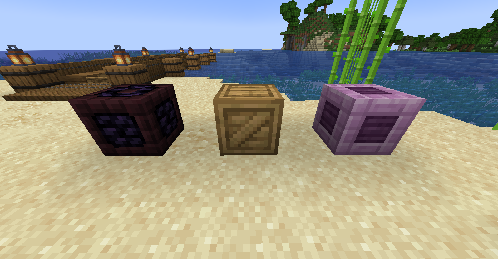
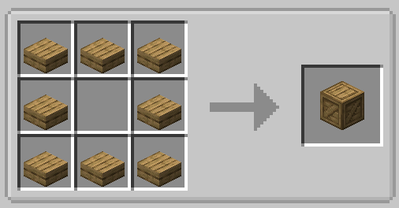

Loot Crates
Loot crates are blocks that can be randomly pulled from the water when fishing in lava or open water. When fished, they contain loot that changes dynamically depending on where they are pulled from.

Rarity
In order to catch a crate, the player must be fishing either in open water (meaning there's no blocks besides water near the bobber) or anywhere in lava. After that, crate chance varies depending on the player's luck. Having a higher fishing luck will increase the chances of catching a crate.
Tip
You can increase the chance of catching a crate while fishing to 25% by fishing with magnetic bait equipped!
Here's a simplified version of minecraft's fishing loot table, including Tide's crate chances.
"entries": [
// Minecraft's default fishing loot
{
"name": "minecraft:gameplay/fishing/fish",
"quality": -1,
"weight": 85
},
{
"name": "minecraft:gameplay/fishing/junk",
"quality": -2,
"weight": 10
},
{
"name": "minecraft:gameplay/fishing/treasure",
"quality": 2,
"weight": 5
},
// Tide's crate loot
{
"name": "tide:gameplay/fishing/crates/block",
"quality": 1,
"weight": 6
}
]
Types
Wooden Crate
The wooden crate can be pulled from water in dimensions besides the nether and the end. They are unique among crates in that they can also be crafted from 8 wooden slabs, but obviously won't come with loot when you craft them.

Note
If the mod can't determine the correct crate to be pulled for whatever reason, it will default to the surface loot crate with freshwater loot.
Loot
Freshwater
- Salmon
- Trout
- Stick
- Cobblestone
- Iron Nugget
- Bass
- Wheat
- Wheat Seeds
- Sand
- Enchanted Book (with random enchantments)
Saltwater
- Salmon
- Trout
- Tuna
- Iron Nugget
- Gold Nugget
- Iron Ingot
- Gold Ingot
- Emerald
- Fishing Rod (with random durability and enchantments)
- Enchanted Book (with random enchantments)
- Written Book (with legendary fish hints)
Underground (stone layer)
- Stick
- Iron Nugget
- Cobblestone
- Andesite
- Gold Ingot
- Lapis Lazuli
- Stone Pickaxe (with random durability and enchantments)
- Enchanted Book (with random enchantments)
Deep Underground (deepslate layer)
- Iron Nugget
- Raw Copper
- Raw Iron
- Gold Ingot
- Lapis Lazuli
- Redstone
- Amethyst Shard
- Emerald
- Diamond
- Iron Pickaxe (with random durability and enchantments)
- Enchanted Book (with random enchantments)
Obsidian Crate
The obsidian crate can be pulled from lava while lava fishing in any dimension besides the end.
Loot
Overworld Lava (surface)
- Gold Nugget
- Flint
- Bone
- Obsidian
- Obsidian Fragment
- Magma Block
- Enchanted Book (with random enchantments)
Overworld Lava (underground)
- Coal
- Bone
- Crying Obsidian
- Obsidian Fragment
- Magma Block
- Diamond
- Enchanted Book (with random enchantments)
Overworld Lava (deep underground)
- Iron Ingot
- Bone
- Obsidian
- Crying Obsidain
- Copper Ingot
- Gold Ingot
- Diamond
- Enchanted Book (with random enchantments)
The Nether
- Magma Mackerel
- Ashen Perch
- Nether Brick
- Nether Wart
- Blaze Powder
- Magma Cream
- Gold Ingot
- Gold Block
- Netherite Scrap
- Enchanted Book (with random enchantments)
End Crate
The end crate can be pulled from water or lava while fishing in the end.
Note
You still need to be fishing in open water to catch crates, even in the end. You may have to construct a large enough pool of water before finding these.
Loot
The End
- Ender Pearl
- Chorus Fruit
- Popped Chorus Fruit
- Shulker Shell
- Elytra
The End (lava)
- Ender Pearl
- Chorus Fruit
- Popped Chorus Fruit
- Shulker Shell
- Elytra
Tip
Lava fishing in the end will grant you a slightly higher chance of rare loot! Good luck bringing enough lava over though.